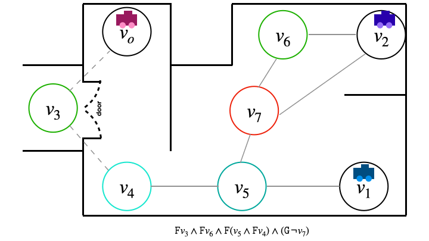
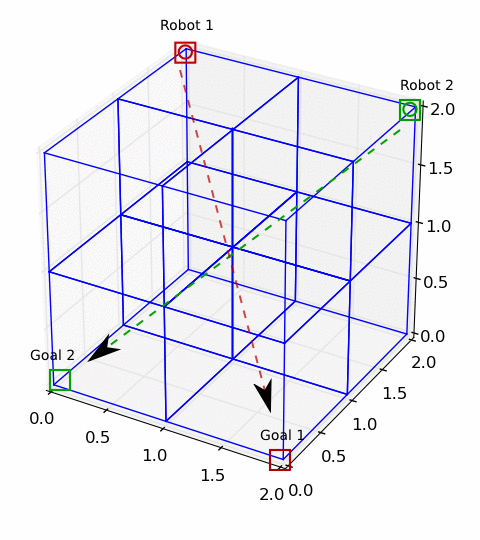
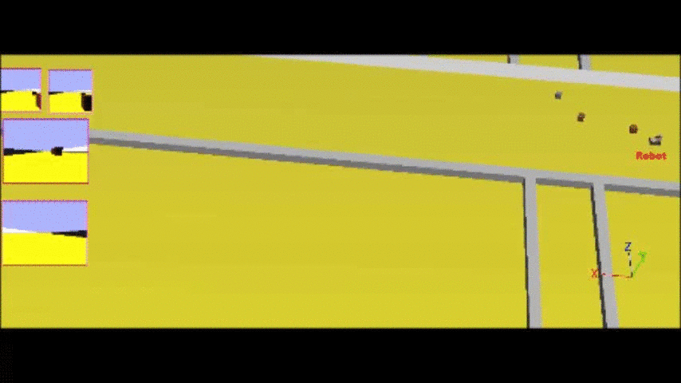
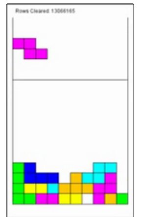
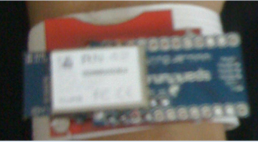

About me
I am a Postdoctoral Research Associate at the University of Manchester in the Autonomy and Verification Group. I work with Michael Fisher, Louise Dennis and Clare Dixon. My current focus is runtime verification of robots. I am also involved with the Trustworthy Autonomonous Systems Hub's Verifiability Node.
Experience
I have been awarded a PhD jointly by the University of Birmingham and University of Melbourne. My PhD studies were supported by the Priestly Scholarship which is a joint degree program between the two universities. My PhD thesis was titled Verified multi-robot planning under uncertainty. My wonderful advisers were Dr. Dave Parker, Dr. Nick Hawes and Dr. Tim Miller (University of Melbourne) and Dr. Bruno Lacerda. My research focus was multi robot planning utilizing formal methods. I was also part of the Intelligent Robotics Lab.
I have an MSc. in Robotics from Carnegie Mellon University where I was part of the CORAL lab under Dr. Manuela Veloso. I have a B.E in Computer Engineering from the National University of Science and Technology (NUST), Pakistan. After my masters I worked as a lecturer at NUST, teaching undergraduates introduction to programming. Before my masters I worked as a software developer at LMKR which is an oil and gas software compnany.
Research/Projects
Verified multi-robot planning under uncertaintyMy PhD work investigated task allocation and planning robust to robot failure with a quantitative guarantee on the expected number of tasks completed by the team. I looked at three different algorithms for task allocation and planning, incorporating task reallocation when a robot failed. |
 |
When to Coordinate - Learning Sparse State Interactions in Multi Robot PoliciesFor my masters' thesis I implemented a two layer Q-learning algorithm for Sparse Interaction MDPs and abstracted it to 3D space for the manipulation robot Baxter.(Here are videos of generated policies Video1, Video2) |
 |
Robot SafetyDuring my masters I also implemented a provably safe version of the the Dynamic Window Approach for obstacle avoidance using ROS.(Here are videos of a very basic setup on a robot Video1,Video2) |  |
Playing TetrisFor the adaptive control and reinforcement learning course we implemented a policy improvement algorithm that learned to play tetris. (Video) |
 |
Gesture Recognition using MEMSFor my undergrad final year project, my groupmate and I implemented a proof of concept for gesture recognition using wireless sensor network and Hidden Markov Models. We worked under the supervision of Dr. Saad Qaiser and Dr. Aasia Khanum. |
 |
Misc
During my bachelors, my team and I designed and fabricated an autonomous robot that could line track and place pegs in stands for a national competition.For the Systems Engineering course in my masters, I was part of a team that made an exhibit which was deployed in the Pittsburgh Children's Museum for 3 days where kids could race dummy robot cars.I'm also interested in teaching kids robotics and was part of CMU-Scitech where we taught middle schoolers arduino and scratch programming. As a lecturer at NUST, I organized and conducted workshops on Lego Robot Programming for school children and was also part of the Theme Committee for the National Engineering Robotics Contest.
Robot Simulator
For our computer graphics course in my undergrad, my teammates and I implemented a robot simulator using OpenGL and C++ which allowed the user to build a crude robot chassis in 3-D, place sensoros, input a line track and see how the robot did. The project was very close to my heart and a lot of fun particularly because we were competing in an actual robotics compeition as well!Just things I'd like to list
- This fun introduction to planning by Prof. Dr. Joerg Hoffmann that I stumbled upon.
- Patari is the "Spotify" for Pakistani Music with some really great playlists - political and sufi.
- Code for Pakistan among other inspirational initiatives making tech inspired solutions possible.
- Action Tutoring is an education charity that supports pupils from disadvantaged backgrounds.